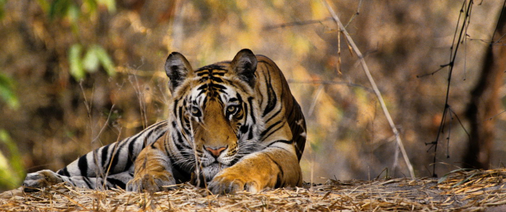
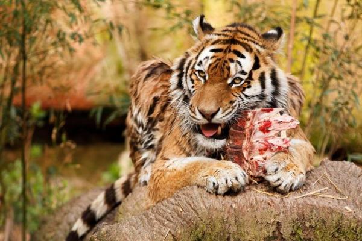
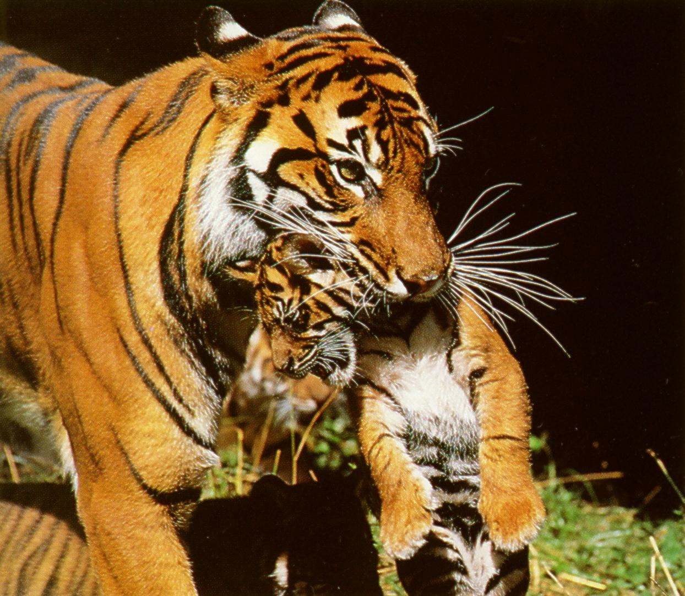
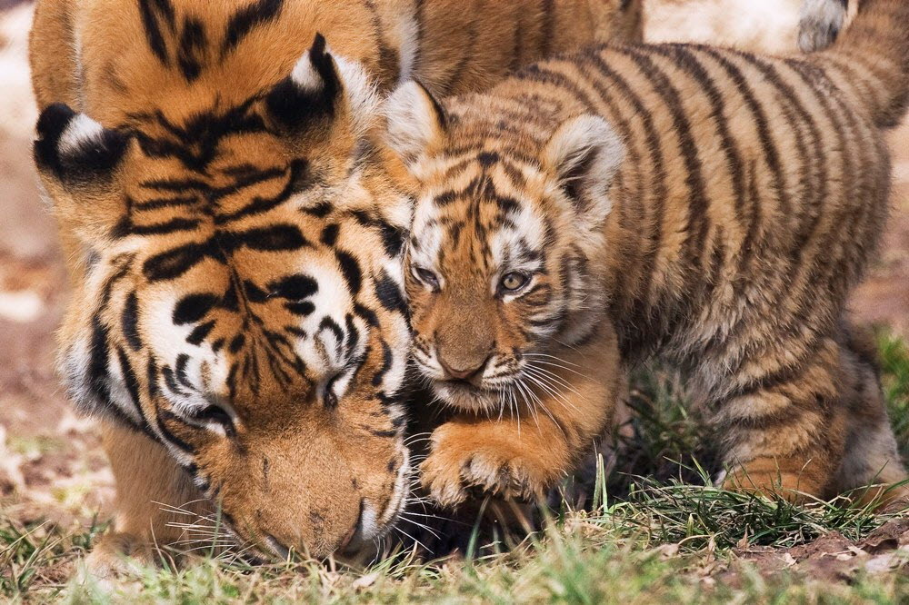
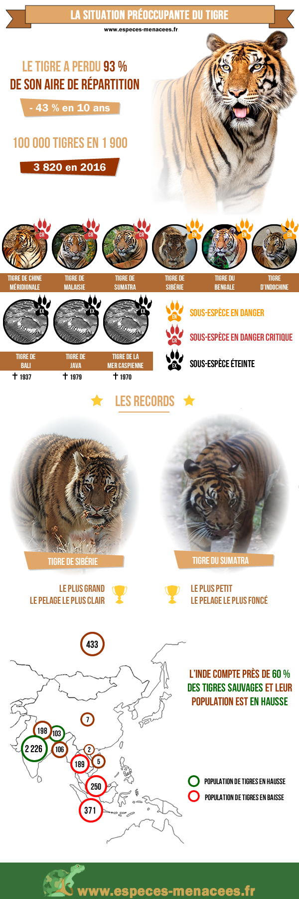
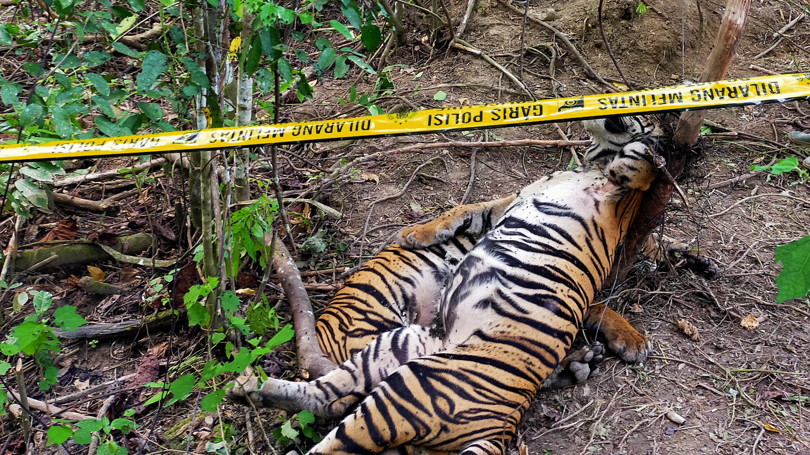

Le tigre vit dans les forêts et dans les prairies du sud et de l’est de l’Asie, en Inde, sur l’île de Sumatra, en Chine, et à l’Est de la Russie. Un tigre vit en moyenne 16 ans à l'état sauvage. Mais on peut estimer sa durée de vie à 25 ans lorsqu'il est en captivité. C'est un félin solitaire et il aime rarement partager son territoire. Sur un territoire mesurant entre 30 et 70 km2.Son lieu de repos est une tanière et il peut en posséder plusieurs sur un même territoire. C'est le seul félin à apprécier la nage, il traverse facilement les cours d’eau larges de 6 à 8 km. Ce bon athlète peut courir jusqu’à 50 km/h et bondir jusqu'à 11,5 m de long.

Le tigre est un animal carnivore. Il mange le plus souvent des animaux herbivores comme les élans, les sangliers, cervidés, gaurs mais aussi oiseaux, singes ou poissons. Il peut avaler jusqu’à 18 kg de viande en un seul repas, à la suite de quoi il jeûne pendant quelques jours. Les tigres, cachés près du sol, attendent le meilleur moment pour surprendre leurs proies. Malgré la puissance de ses muscles, l’efficacité de ses griffes et celle de ses crocs, il ne parvient pas à se nourrir de façon régulière.

La tigresse est sexuellement mature entre 3 et 4 ans, tandis que le mâle ne l'est qu'entre 4 et 5 ans. La femelle n'est réceptive et donc fertile qu'entre 3 et 7 jours par an. La gestation s'étend sur une période de 3 à 4 mois. Les portées comptent de 2 à 4 jeunes qui naissent aveugles à la naissance. Ils ne commencent à distinguer leur environnement qu'au bout de 10 jours. La mère les allaite les deux premiers mois avant de commencer à leur apporter de petites proies. Lorsque les jeunes ont atteint 8 mois, leur mère les emmène avec elle à la chasse et leur enseigne ses techniques. Les préadultes quittent leur famille au bout de 18 mois et il n'est pas exceptionnel d'observer deux frères chasser ensemble.


| espèce | population | statue |
|---|---|---|
| tigres de Java | 0 | disparu dans les années 1950 |
| tigres de Bali | 0 | disparu dans les années 1950 |
| tigres de la Caspienne | 0 | disparu dans les années 1950 |
| tigres | 3 890 | En danger d'extinction |

